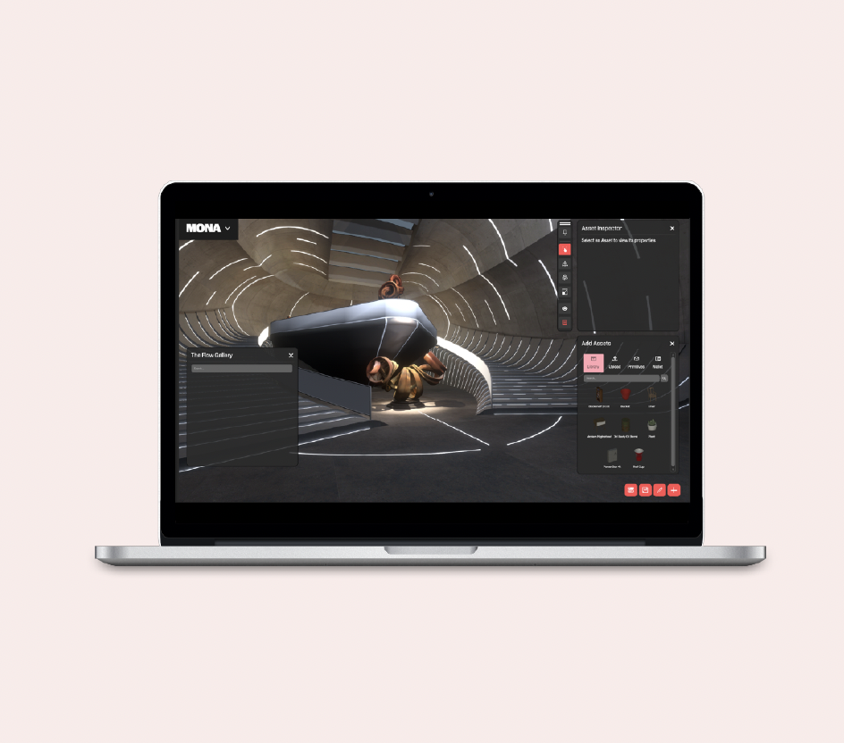
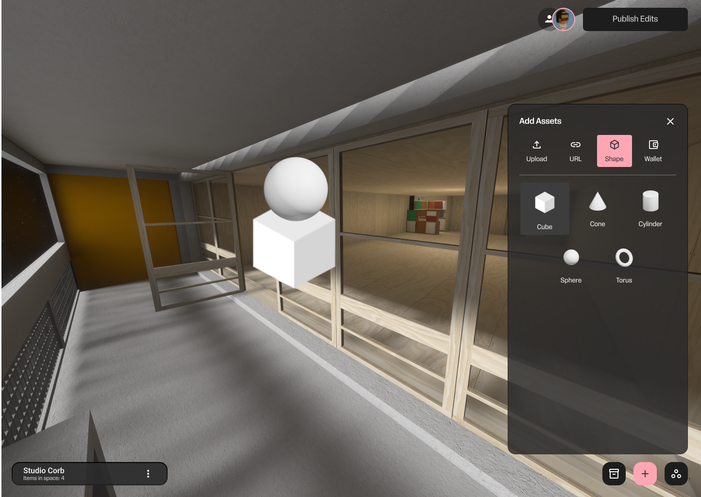

MONA: Web3 3D Creator Platform and Marketplace
A blockchain-powered 3D creator platform and marketplace — and MONA Create, the 0→1 worldbuilding tool that lets artists, game builders, and new creators design, play, and own immersive spaces without advanced Unity expertise.
Overview
MONA is a blockchain-powered 3D creator platform and marketplace designed to empower artists, game developers, and digital creators to seamlessly build, customize, and monetize immersive virtual experiences. The product ecosystem includes a digital asset marketplace (NFTs), a multiplayer online 3D metaverse, and a Unity-powered 3D creation tool that enables users to easily design, play, and own their own virtual worlds.
Through extensive product mapping and user research, we identified a need for a low-barrier, creator-friendly toolset that removes the complexity of traditional 3D development. That led to MONA Create: an intuitive worldbuilding platform for interactive multiplayer experiences — whether for virtual events, social gaming, or digital art exhibitions — so more people can participate in the metaverse economy with ease.
The Problem
Barriers to building in 3D
Traditional 3D worldbuilding still leaned on a steep technical barrier — advanced Unity or development expertise most creators did not have. Tools for assembling multimedia and NFT-native experiences were limited, and once a world was live there were few ways for audiences to interact beyond looking around.
Through product mapping and research we kept hearing the same gap: a low-barrier, creator-friendly toolset that removed that complexity without stripping away what made MONA feel powerful.
The Challenge
MONA Create was 0→1
MONA Create was a 0→1 product. The biggest challenge was balancing existing users (3D creators, artists, and game builders) with an evolving market of buyers (NFT buyers and collectors) and game players who were not world builders.
Solution
MONA Create as a web app
MONA Create ships as a web app so creators can import, place, and edit 2D and 3D assets, media, and NFTs; use AI text-to-3D and AI NPCs; add animation and interactivity; load a wallet; and start from templates.
The roadmap held room for permissioning, multi-chain support, and asset packs — without blocking the 0→1 path that got people building in the browser first.
My Work
Design streams on MONA Create
I led design across the 0→1 surface of Create — from how people arrive and authenticate, to how they build worlds, manage on-chain assets, and understand performance.
Web3 auth & onboarding
Wallet-aware entry paths that help creators and collectors get in without losing the thread of what they came to make or explore.
3D world & game creation
Flows for placing assets, media, and interaction so building a space feels closer to composing than compiling.
Blockchain asset management
Ways to bring NFTs and other on-chain assets into the world as first-class creative material, not an afterthought.
Performance & analytics
Surfacing space health — assets, memory, load — so creators can ship experiences that stay playable.
Specs for blockchain & AI
Design handoff and specifications that kept blockchain and AI partners aligned as Create moved from concept into build.
Impact
Create made worldbuilding more accessible, opened more room for interaction inside spaces, and drove a 22% increase in user engagement in beta.
“I could easily see myself doing the entire 3D space creation here (in Create)." Early beta tester & 3D game builder/artist
Capabilities
0→1 Product Design · Web3 UX · 3D Creation Tools · NFT & Wallet Flows · AI-assisted Creation · Interaction Design · Performance UX · Specs & Handoff
Selected Work
MONA Create in the editor
Screens from Create — galleries, studios, wallets, performance, and published spaces.

